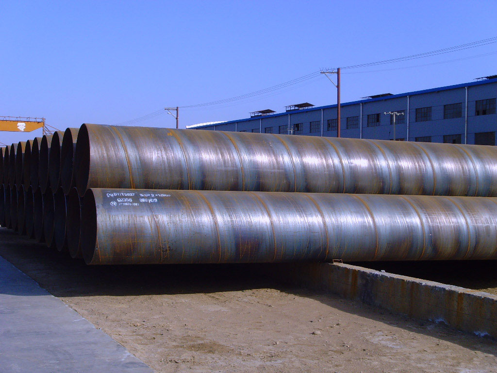

天津螺旋钢管标准金率有小幅下调的可能

不只如此，近期原资料价钱的走低也对市场非常不利，年前，不论怎样样，铁矿石价钱弱稳为主，或多或少支撑着商家挺价，但是，近期，天津螺旋钢管标准据音讯显示，铁矿石价钱继续下跌，截止7日，普指持续下跌1美金，现62%澳粉指数120.25美元/吨。铁矿期货开盘：矿石05收856，跌10跌幅1.15%，最高868最低853。春节时期，螺旋钢管市场表现失望，而且库存又下跌的趋向，天津螺旋钢管标准年后假如需求不呈现一定回暖，估量钢厂的推销也会踌躇，由此看来，铁矿石行情也难言悲观。总结：年后的这股暖流不只是天气变冷了，就连大少数钢贸商的心也逐步变凉了。当然如今说需求不会呈现也有点过早了，但是，从以上剖析的各点来看，不论是微观音讯还是库存，还是原资料价钱方面，都对市场不利，2014年这场残局，钢市是毫无抬升优势啊。
关于经济情势，将来一段时期中国经济仍无望坚持颠簸向好、稳中有进的态势。但受金融脱媒放慢、互联网金融进一步开展、IPO开闸以及财政存款难以大幅下放等要素的影响，活动性趋紧的形态难以基本改观。往年货币政策对活动性趋紧的应对会绝对积极，螺旋钢管预备金率有小幅下调的能够。
地址：河北沧州螺旋钢管生产基地
手机：186-3170-5801 == QQ791117